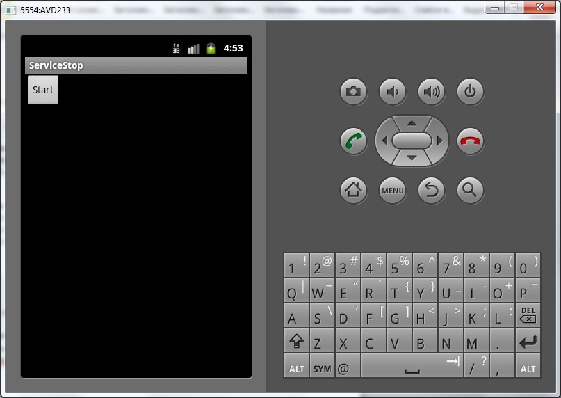

В этом уроке:
- передаем данные в сервис
- рассматриваем методы остановки сервиса stopSelf и stopSelfResult
В прошлом уроке мы использовали в коде метод stopSelf. Он вызывается внутри сервиса и останавливает этот сервис. У этого метода есть еще пара вариаций: stopSelf(int startId) и stopSelfResult(int startId). Как видим, на вход они требуют некий startId. Что это и откуда его взять? Для ответа на вопрос давайте взглянем на входящие параметры метода onStartCommand:
Первый – это Intent. Тот самый, который отправляется в путь, когда мы стартуем сервис с помощью метода startService. Соответственно вы можете использовать его для передачи данных в ваш сервис. Тут все аналогично, как при вызове другого Activity – там вы тоже можете передать данные с помощью intent.
Второй параметр – флаги запуска. Он нам пока не нужен, пропускаем его.
Третий параметр – startId. Простыми словами – это счетчик вызовов startService пока сервис запущен. Т.е. вы запустили сервис методом startService, сработал метод onStartCommand и получил на вход startId = 1. Вызываем еще раз метод startService, сработал метод onStartCommand и получил на вход startId = 2. И так далее. Счетчик сбрасывается, когда сервис будет остановлен методами stopService, stopSelf и пр. После этого вызовы снова идут с единицы.
Именно этот startId и нужен на вход методу stopSelf(startId). Т.е. этот метод дает системе понять, что конкретный вызов сервиса был успешно обработан. И мне кажется логичным, что, когда все вызовы сервиса выполнили метод stopSelf(startId) и система видит, что не осталось необработанных вызовов – сервис можно останавливать. Т.е. поступила куча вызовов, они все обработались и когда последний обработанный (но при этом не обязательно последний поступивший) выполняет stopSelf(startId) – сервис останавливается.
Но на самом деле алгоритм чуть другой. Сервис останавливается, когда последний полученный (а не последний обработанный) вызов выполняет метод stopSelf(startId). А при этом могут продолжать работать ранее полученные вызовы. Почему так сделано – я не знаю.
В общем, наверно сумбурно объяснил, сейчас на примерах все станет понятнее.
А метод stopSelfResult(startId) аналогичен методу stopSelf(startId), но при этом еще возвращает boolean значение – остановил он сервис или нет.
Создадим проект:
Project name: P0931_ServiceStop
Build Target: Android 4.0
Application name: ServiceStop
Package name: ru.startandroid.develop.p0931servicestop
Create Activity: MainActivity
Добавим в strings.xml строки:
<string name="start">Start</string>Экран main.xml:
<?xml version="1.0" encoding="utf-8"?>
<LinearLayout
xmlns:android="http://schemas.android.com/apk/res/android"
android:layout_width="fill_parent"
android:layout_height="fill_parent"
android:orientation="vertical">
<Button
android:id="@+id/btnStart"
android:layout_width="wrap_content"
android:layout_height="wrap_content"
android:onClick="onClickStart"
android:text="@string/start">
</Button>
</LinearLayout>Только кнопка для запуска сервиса.
Создаем сервис MyService.java:
package ru.startandroid.develop.p0931servicestop;
import java.util.concurrent.ExecutorService;
import java.util.concurrent.Executors;
import java.util.concurrent.TimeUnit;
import android.app.Service;
import android.content.Intent;
import android.os.IBinder;
import android.util.Log;
public class MyService extends Service {
final String LOG_TAG = "myLogs";
ExecutorService es;
Object someRes;
public void onCreate() {
super.onCreate();
Log.d(LOG_TAG, "MyService onCreate");
es = Executors.newFixedThreadPool(1);
someRes = new Object();
}
public void onDestroy() {
super.onDestroy();
Log.d(LOG_TAG, "MyService onDestroy");
someRes = null;
}
public int onStartCommand(Intent intent, int flags, int startId) {
Log.d(LOG_TAG, "MyService onStartCommand");
int time = intent.getIntExtra("time", 1);
MyRun mr = new MyRun(time, startId);
es.execute(mr);
return super.onStartCommand(intent, flags, startId);
}
public IBinder onBind(Intent arg0) {
return null;
}
class MyRun implements Runnable {
int time;
int startId;
public MyRun(int time, int startId) {
this.time = time;
this.startId = startId;
Log.d(LOG_TAG, "MyRun#" + startId + " create");
}
public void run() {
Log.d(LOG_TAG, "MyRun#" + startId + " start, time = " + time);
try {
TimeUnit.SECONDS.sleep(time);
} catch (InterruptedException e) {
e.printStackTrace();
}
try {
Log.d(LOG_TAG, "MyRun#" + startId + " someRes = " + someRes.getClass() );
} catch (NullPointerException e) {
Log.d(LOG_TAG, "MyRun#" + startId + " error, null pointer");
}
stop();
}
void stop() {
Log.d(LOG_TAG, "MyRun#" + startId + " end, stopSelf(" + startId + ")");
stopSelf(startId);
}
}
}Скажем прямо, тут немного нетривиально получилось :) , особенно если опыт работы в Java небольшой. Но попробуем разобраться.
В onCreate создаем некий объект someRes. Это моя выдумка, на примере этого объекта я попробую показать, какую нехорошую ситуацию с ресурсами можно получить с применением метода stopSelf(startId). Этот объект будет использоваться сервисом в обработках вызовов. Пока что на него можно особо не смотреть.
Executors.newFixedThreadPool(1) – эта строка дает нам объект (я буду называть его - экзекьютор), который будет получать от нас задачи (Runnable) и запускать их по очереди в одном потоке (на вход ему мы передаем значение 1). Он сделает за нас всю работу по управлению потоками.
В onDestroy обнуляем someRes.
В onStartCommand мы читаем из intent параметр time. Создаем Runnable-объект MyRun, передаем ему time и startId и отдаем этот объект экзекьютору, который его запустит в отдельном потоке.
MyRun – Runnable-объект. Он и будет обрабатывать входящие вызовы сервиса. В конструкторе он получает time и startId. Параметр time будет использован для кол-ва секунд паузы (т.е. эмуляции работы). А startId будет использован в методе stopSelf(startId), который даст сервису понять, что вызов под номером strartId обработан. В лог выводим инфу о создании, старте и завершении работы. Также здесь используем объект someRes, в лог просто выводим его класс. Если же объект = null, то ловим эту ошибку и выводим ее в лог.
В общем, получилась, на первый взгляд, непонятная мегамонстроконструкция, но я реально не смог придумать ничего проще, чтобы наглядно показать тему урока. Сейчас все это взлетит и станет понятнее )
Почему вообще я использую потоки, я показал в прошлом уроке. Т.к. сервис работает в том же потоке, что и приложение и соответственно будет тормозить экран своей работой.
Да, и не забудьте прописать сервис в манифесте!
Кодим MainActivity.java:
package ru.startandroid.develop.p0931servicestop;
import android.app.Activity;
import android.content.Intent;
import android.os.Bundle;
import android.view.View;
public class MainActivity extends Activity {
/** Called when the activity is first created. */
@Override
public void onCreate(Bundle savedInstanceState) {
super.onCreate(savedInstanceState);
setContentView(R.layout.main);
}
public void onClickStart(View v) {
startService(new Intent(this, MyService.class).putExtra("time", 7));
startService(new Intent(this, MyService.class).putExtra("time", 2));
startService(new Intent(this, MyService.class).putExtra("time", 4));
}
}По нажатию на кнопку мы отправляем вызов в сервис три раза. И в intent помещаем параметр time.
Соответственно в сервисе будет три раза выполнен метод onStartCommand. Будет создано и передано экзекьютору три MyRun-объекта. Он их по очереди начнет выполнять. Это займет у него соответственно 7,2 и 4 секунд (время паузы мы передаем в intent-е). В конце обработки каждого MyRun будет выполняться stopSelf(startId).
Все сохраняем и запускаем приложение.

Жмем Start, открываем логи и ждем секунд 15. Все должно закончиться строкой MyService onDestroy
Давайте разбирать, чего получилось.
MyService onCreate
Сервис создан
MyService onStartCommand
MyRun#1 create
MyService onStartCommand
MyRun#2 create
MyService onStartCommand
MyRun#3 create
Три раза выполнился метод onStartCommand, т.к. мы в приложении три раза вызвали startService. В каждом вызове создалось по одному объекту MyRun. После символа # идет значение startId. Т.е. видим, что счетчик вызовов работает и startId увеличивается на единицу при каждом вызове.
Все MyRun объекты были переданы экзекьютору, и он начинает их обрабатывать по очереди в одном потоке.
MyRun#1 start, time = 7
MyRun#1 someRes = class java.lang.Object
MyRun#1 end, stopSelf(1)
Первый готов. Метод stopSelf(1) вызван, сервис продолжает жить.
MyRun#2 start, time = 2
MyRun#2 someRes = class java.lang.Object
MyRun#2 end, stopSelf(2)
Второй готов. Метод stopSelf(2) вызван, сервис продолжает жить.
MyRun#3 start, time = 4
MyRun#3 someRes = class java.lang.Object
MyRun#3 end, stopSelf(3)
MyService onDestroy
Третий готов. Метод stopSelf(3) вызван и сервис после этого остановлен (MyService onDestroy), т.к. для последнего поступившего вызова (номер 3 в нашем случае) был вызван stopSelf(startId).
Но, как я написал в начале урока, мне кажется странным останавливать сервис, если закончена обработка последнего поступившего вызова. В этом примере у нас вызовы обрабатывались по очереди и проблем не возникло. Т.е. последний поступивший вызов обрабатывался последним и его stopSelf(startId) останавливал сервис. Но, что если вызовы будут обрабатываться параллельно? И последний поступивший вызов выполнит stopSelf(startId), а первый поступивший еще будет работать? Проверим.
В MyService.java в методе onCreate в строке создания экзекьютора поменяйте 1 на 3. Должно получиться так:
public void onCreate() {
super.onCreate();
Log.d(LOG_TAG, "MyService onCreate");
es = Executors.newFixedThreadPool(3);
someRes = new Object();
}Теперь наш экзекьютор будет выполнять поступающие ему задачи не в одном, а в трех разных потоках. Как говорил один полосатый кошак из Простоквашино: «я и так счастливый был, а теперь в три раза счастливее стал, потому что у меня теперь три потока есть» :) Соответственно, три наших вызова будут теперь обработаны параллельно, а не по очереди. И пришло время обратить внимание на someRes.
Все сохраним и запустим, жмем Start. На этот раз все заняло не 15 сек, а 7. Последняя строка логов должна быть такой: MyRun#1 end, stopSelf(1)
Разбираемся в логах.
MyService onCreate
Сервис создан
MyService onStartCommand
MyRun#1 create
MyService onStartCommand
MyRun#2 create
MyRun#1 start, time = 7
MyService onStartCommand
MyRun#3 create
MyRun#2 start, time = 2
MyRun#3 start, time = 4
(у вас может быть немного иной порядок строк)
Три раза выполнился метод onStartCommand, т.к. мы в приложении три раза вызвали startService. В каждом вызове создалось по одному объекту MyRun и все они сразу начали работать, потому что экзекьютор теперь раскидал их по трем потокам и им не надо ждать друг друга.
Судя по параметру time, который мы используем для паузы, MyRun#2 закончит работать первым (через 2 сек.), MyRun#3 – вторым (через 4 сек.), MyRun#1 – третьим (через 7 сек.). Так и происходит.
MyRun#2 someRes = class java.lang.Object
MyRun#2 end, stopSelf(2)
Объект someRes доступен. Вызов с startId = 2 обработан. stopSelf(2) вызван – сервис продолжает жить.
MyRun#3 someRes = class java.lang.Object
MyRun#3 end, stopSelf(3)
MyService onDestroy
someRes доступен. Вызов с startId = 3 обработан. stopSelf(3) вызван – сервис остановлен (MyService onDestroy). Тут все верно - последний поступивший вызов имеет startId = 3, следовательно, вызов метода stopSelf(3) останавливает сервис. Следовательно, выполнился метод onDestroy, а в нем обнулился someRes.
MyRun#1 error, null pointer
MyRun#1 end, stopSelf(1)
someRes недоступен, т.к. он был обнулен чуть раньше в onDestroy. Ну и вызов метода stopSelf(1) уже бесполезен. Сервис был официально остановлен ранее.
Т.е. получилась неприятная ситуация, когда мы в onDestroy освободили объект, а он был еще нужен. А ведь вместо someRes мог быть объект по работе с БД. Здесь надо быть аккуратным, понимать механизм работы stopSelf(startId) и, когда именно этот метод остановит сервис.
Ну и напоследок рассмотрим метод stopSelfResult(startId). Напомню, что он полностью аналогичен методу stopSelf(startId), и при этом возвращает boolean-значение, остановлен сервис или нет после вызова этого метода.
В MyService.java в классе MyRun перепишем метод stop:
void stop() {
Log.d(LOG_TAG, "MyRun#" + startId + " end, stopSelfResult("
+ startId + ") = " + stopSelfResult(startId));
}Мы выводим в лог результат вызова метода stopSelfResult.
Сохраняем, запускаем и жмем Start.
Смотрим логи:
MyService onCreate
MyService onStartCommand
MyRun#1 create
MyService onStartCommand
MyRun#2 create
MyRun#1 start, time = 7
MyService onStartCommand
MyRun#3 create
MyRun#2 start, time = 2
MyRun#3 start, time = 4
MyRun#2 someRes = class java.lang.Object
MyRun#2 end, stopSelfResult(2) = false
MyRun#3 someRes = class java.lang.Object
MyService onDestroy
MyRun#3 end, stopSelfResult(3) = true
MyRun#1 error, null pointer
MyRun#1 end, stopSelfResult(1) = false
Видим, что stopSelfResult(3) вернул true, и тем самым сообщил нам, что именно он остановил сервис. А stopSelfResult(1) и stopSelfResult(2) вернули false – их вызов не привел к остановке сервиса.
Понимаю, что сложно это все, но надеюсь, что у меня получилось тему раскрыть. Если остаются сомнения, попробуйте поиграться экзекьютором, кол-вом потоков и вызовов, и параметром time – должно стать понятнее.
А вообще, до тех пор, пока вам это все не понадобится в боевых условиях, вполне можно понимать это не до конца.